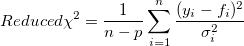
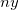
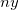

der i-te Y-Datensatz und
der i-te Y-Datensatz und  der i-te Fehler ist. Wenn die Anzahl der Daten groß genug ist, nähert sich n - p an n an und das reduzierte Chi-Quadrat wird von der Differenz zwischen Quelldaten und angepassten Daten und der Gewichtung bestimmt.
der i-te Fehler ist. Wenn die Anzahl der Daten groß genug ist, nähert sich n - p an n an und das reduzierte Chi-Quadrat wird von der Differenz zwischen Quelldaten und angepassten Daten und der Gewichtung bestimmt.Letztes Update: 08.08.2018
Das Hilfsmittel Nichtlinearer Fit in Origin berechnet den Wert des Reduzierten Chi-Quadrats als einen Messwert der Anpassungsgüte. Wenn eine Gewichtung im Anpassungsprozess eingeschlossen wird und das Reduzierte Chi-Quadrat sich sehr von 1 unterscheidet, untersuchen Sie bitte, ob eine ungeeignete Gewichtungsmethode gewählt wurde. Wenn der Wert Reduziertes Chi-Quadrat viel kleiner ist als 1, kann er darauf hinweisen, dass eine Gewichtung zu groß ist. Umgekehrt gilt das gleiche.
Warum müssen Sie die Gewichtungsmethode prüfen?
Typischerweise ist der Wert des reduzierten Chi-Quadrat näher an 1, je besser die Anpassung ist. Wenn die Gewichtung während der Anpassung berücksichtigt wird, weist ein reduziertes Chi-Quadrat nahe an 1 auch darauf hin, dass die Differenz zwischen den beobachteten und den angepassten Daten einen ähnlichen Betrag der Gewichtung hat. Beim Anpassen der Gewichtung wird das reduzierte Chi-Quadrat folgendermaßen berechnet:

wobei n die Anzahl der Daten, p der Freiheitsgrad, der i-te Y-Datensatz und der i-te Fehler ist. Wenn die Anzahl der Daten groß genug ist, nähert sich n - p an n an und das reduzierte Chi-Quadrat wird von der Differenz zwischen Quelldaten und angepassten Daten und der Gewichtung bestimmt.
Wenn sich das reduzierte Chi-Quadrat also sehr von 1 unterscheidet, kann das auf eine ungeeignete Gewichtungsmethode hinweisen. Origin bietet mehrere Gewichtungsmethoden. Bitte lesen Sie auf dieser Seite die Formel für jede Methode nach. Wenn der Wert des reduzierten Chi-Quadrats viel kleiner ist als 1, kann er darauf hinweisen, dass eine Gewichtung zu groß ist. Umgekehrt gilt das gleiche.
Schnelles Beispiel
Wenn Sie eine nichtlineare Kurvenanpassung mit der statistischen Gewichtungsmethode auf einen Datensatz durchführen und ein Anpassungsergebnis für das reduzierte Chi-Quadrat nah an 1 erzeugt wird, weist dies darauf hin, dass das Anpassungsergebnis gut ist. Sie skalieren dann die Y-Daten durch Multiplikation mit dem Faktor 10. Beachten Sie, dass die statistischen Gewichtungsmethoden einen ~Y Betrag als Fehlervariation verwenden. Die Gewichtung wird auch um den Faktor 10 skaliert. Für eine Zufallsvariable  mit der Gewichtung
mit der Gewichtung  sollte die geeignete Gewichtung für  jedoch sein
sollte die geeignete Gewichtung für  jedoch sein
Die statistische Methode kann also keine geeignete Gewichtung für die skalierten Daten berechnen. Der Wert des reduzierten Chi-Quadrats, der viel größer als 1 skaliert ist, weist auch darauf hin, dass er nicht geeignet ist. Um das reduzierte Chi-Quadrat wieder nah an 1 zu bringen, sollten Sie die Methode Instrumentell oder Varianz ~ y^2 wählen, die den Betrag ~y^2 als Gewichtung verwenden.
|
Hinweis:
Zusätzlich zum reduzierten Chi-Quadrat gibt Origin viele weitere Eigenschaften wie R-Quadrat und Korrigiertes R-Quadrat aus, die auch zum Schätzen der Güte des Fits verwendet werden können. |
Schlüsselwörter: Güte, Chi-Quadrat, Residuensumme der Quadrate, Fit, Anpassung, nichtlinear, Varianz